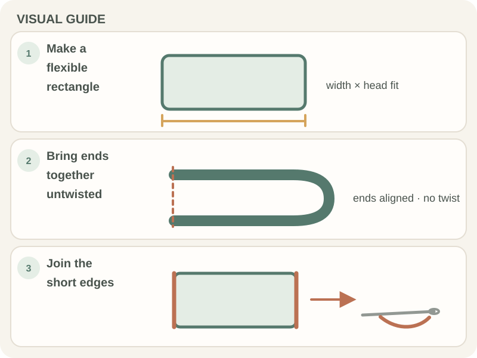

Beginner Projects · Beginner guide
How to Make a Simple Crochet Headband
A simple crochet headband can be a rectangle joined at the ends or a band worked in the round; use the pattern’s construction.

Fit depends on stitch pattern, yarn, and stretch. Measure the wearer or a headband that fits before deciding on length.
Before you begin
Choose yarn and hook for the desired warmth and stretch. Make a swatch in the intended stitch, because ribbing or other textured stitches can stretch differently.
Step-by-step instructions
Make a rectangle first so you can check the fit before joining it.
- Choose the band width and chain until a short swatch reaches that width; record the stitch count.

Real crochet photograph by Zeynep Yüxel via Pexels. - Work even rows in the chosen stitch until the piece wraps comfortably around the head with a little stretch.
- Lay the ends together without twisting the band and pin or hold the seam in place for a fit check.
- Join the ends with a tapestry needle or the method in your pattern, then weave in the tails.

How to check your work
The band should sit comfortably without sliding or pressing. Test its stretch before sewing a permanent seam, and check that the band is not twisted.
Common beginner problems
- The band is too loose: Measure again and compare the relaxed fabric with the intended fit before joining.
- The seam makes a twist: Lay the band flat and align both ends before sewing.
- The band stretches out: Consider yarn recovery and stitch choice; a swatch can reveal this before finishing.
Sizing and stretch
A headband is usually sized with some ease, but the amount depends on yarn and stitch. Do not copy a universal measurement; compare a swatch and test the band before securing the seam.
Frequently asked questions
How long should a headband be?
Use a measurement of the intended wearer and account for the fabric’s stretch.
Which stitch makes a stretchy band?
Some ribbed stitches stretch more than plain fabric, but yarn and tension matter; swatch first.
Can I make it in the round?
Yes, if the pattern is written for joined rounds or a tube. Follow its construction.